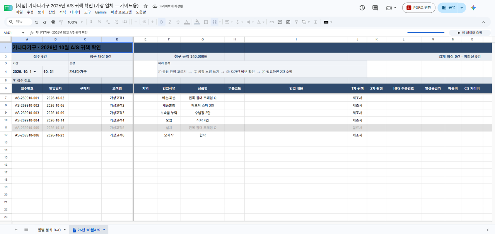
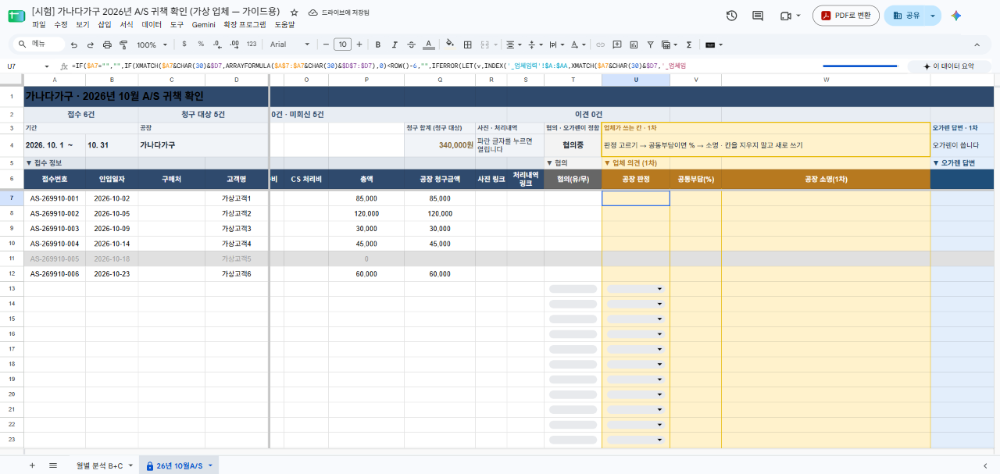
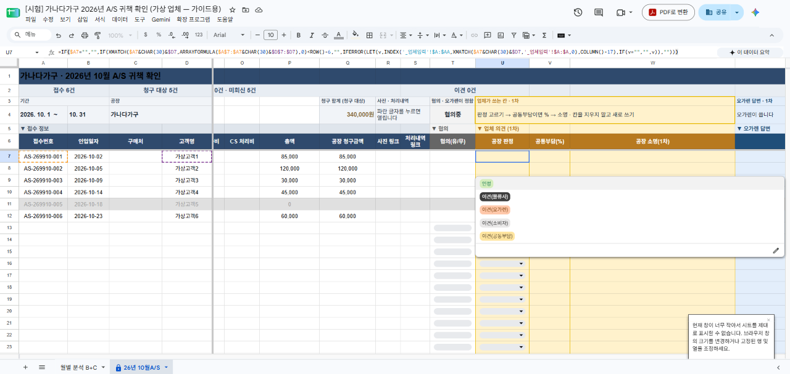
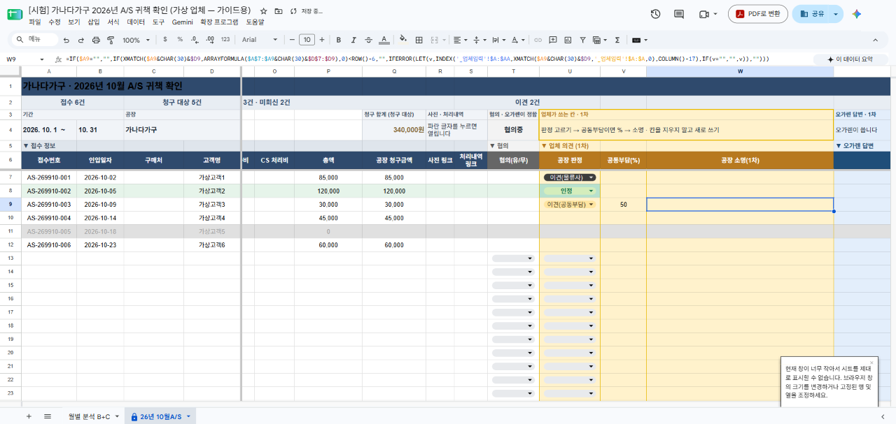
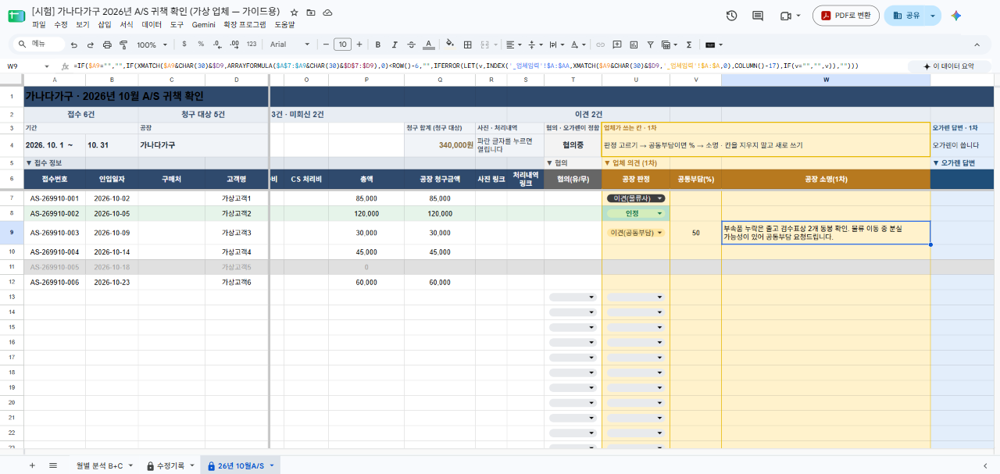
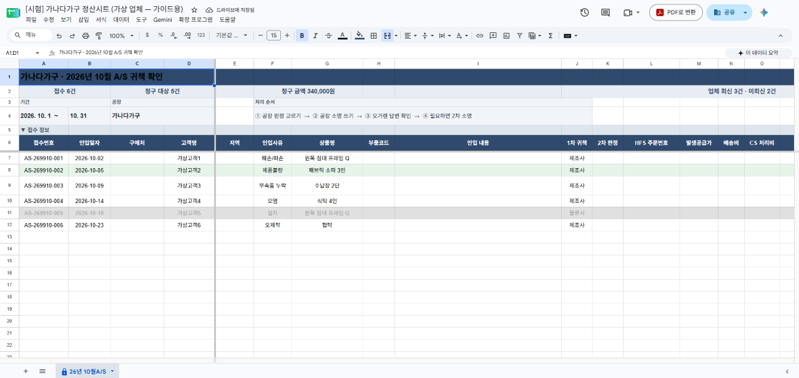
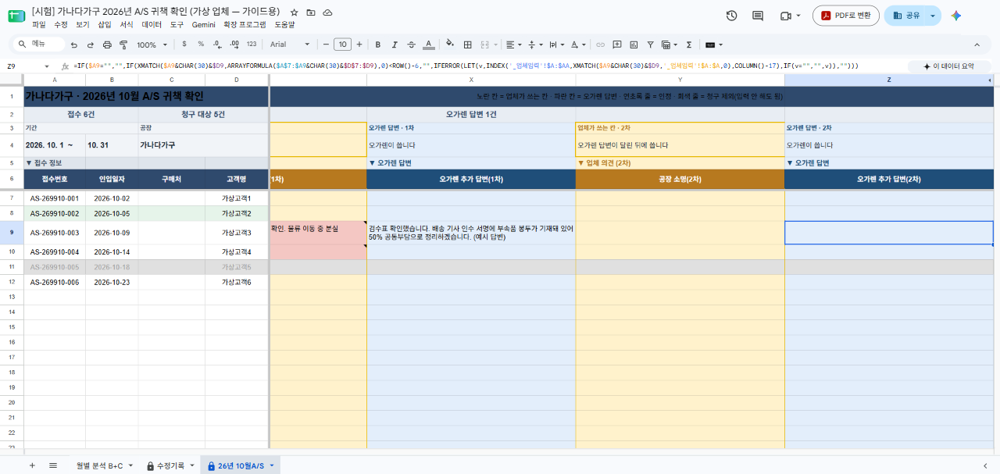
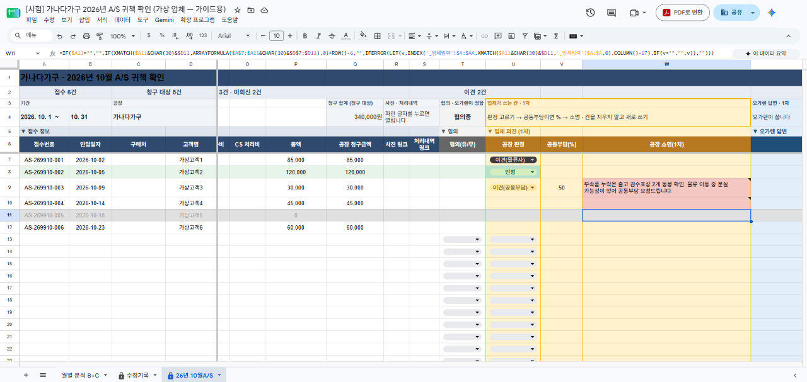
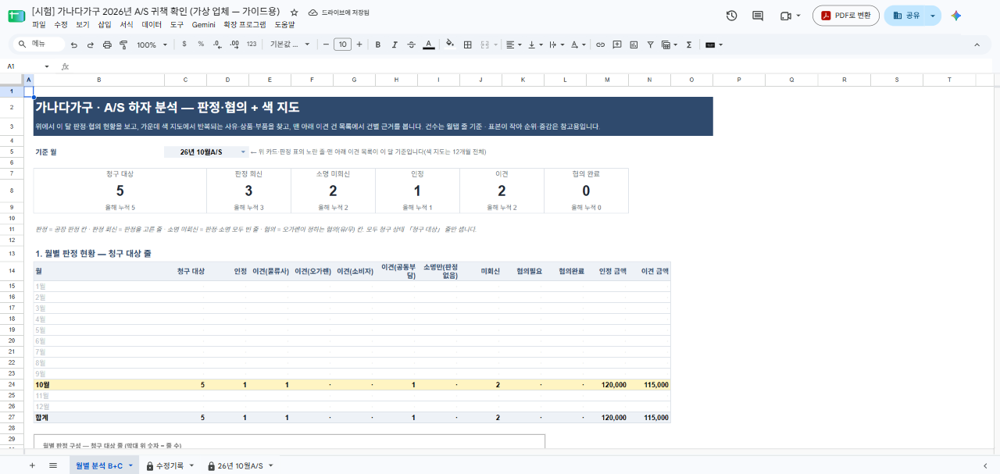

A/S 귀책 확인 · 업체용 안내 · 2026-11-04 기준
공유 워크북 작성 가이드
업체는 월탭의 노란 칸만 쓰면 됩니다. 판정을 고르고 소명을 쓰면 그 순간 저장되고, 오가렌 정산 쪽에도 바로 들어갑니다. 저장 버튼은 없습니다.
아래 화면은 가상 업체 「가나다가구」의 시험 파일에서 실제로 입력해 찍은 것입니다. 고객명·상품·금액은 모두 가짜입니다.
1. 화면 보는 법

| 보이는 것 | 뜻 |
|---|---|
| 노란 칸 | 업체가 쓰는 칸 — 공장 판정 · 공동부담(%) · 공장 소명(1·2·3차) |
| 파란 칸 | 오가렌이 쓰는 답변 칸(업체는 읽기만) |
| 연초록 줄 | 판정을 「인정」으로 고른 줄 |
| 회색 줄 | 청구 제외 — 이번 청구에서 빠진 접수라 입력하지 않아도 됩니다 |
| 2행 현황 | 업체 회신·미회신·이견 건수가 입력에 따라 바로 바뀝니다(같은 접수가 여러 줄이면 1건으로 셉니다) |
| 사진 링크 · 처리내역 링크 | 파란 글자를 누르면 그 접수의 사진과 처리 내역(카드)이 열립니다 |
2. 작성 순서

- 노란 칸이 있는 줄을 찾습니다. 회색 줄(청구 제외)은 건너뜁니다.
- 근거를 확인합니다. 「사진 링크」·「처리내역 링크」의 파란 글자를 눌러 사진과 처리 내역을 봅니다.
- 공장 판정을 고릅니다. 칸을 누르면 목록이 열립니다(칸을 고른 뒤 Enter 를 눌러도 열립니다).

| 선택지 | 언제 고르나 |
|---|---|
| 인정 | 공장 귀책이 맞을 때 |
| 이견(물류사) | 배송·운반 중 생긴 문제라고 볼 때 |
| 이견(오가렌) | 판매·안내·주문 쪽 문제라고 볼 때 |
| 이견(소비자) | 고객 사용·설치 과정의 문제라고 볼 때 |
| 이견(공동부담) | 책임을 나눠야 한다고 볼 때 — 다음 칸에 공장 부담 % 를 씁니다 |
- 이견(공동부담)이면 공동부담(%) 칸에 숫자를 씁니다. 예: 공장이 절반이면
50. 다른 판정에서는 % 칸을 받지 않습니다. - 공장 소명(1차)에 근거를 씁니다. 무엇을 확인했는지(검수표·사진·출고 기록 등)를 구체적으로 적습니다.
- 끝. 저장 버튼이 없습니다. 칸을 벗어나면 저장되고, 오가렌 정산 쪽에도 바로 들어갑니다.



3. 오가렌 답변과 2차 소명

- 오가렌 답변(파란 칸)을 읽습니다. 답변이 달리면 2행 「오가렌 답변 N건」이 늘어납니다.
- 더 할 말이 있을 때만 공장 소명(2차)에 씁니다. 3차까지 같은 방식입니다.
- 이견 건은 오가렌이 「협의(유/무)」 칸으로 진행 상태를 표시합니다(협의필요 → 협의완료). 이 칸은 오가렌만 바꿉니다.
4. 카드(처리내역)로 회신하기
「처리내역 링크」를 누르면 그 접수의 카드가 열립니다. 카드에서 인정 / 이견을 고르고(이견이면 귀책·공동부담 %) 의견을 쓰고 저장하면, 월탭의 같은 노란 칸(공장 판정·공동부담·공장 소명)에 바로 들어갑니다. 월탭에 직접 쓰는 것과 결과는 같습니다.
- 이견일 때 귀책은 물류사 · 오가렌 · 소비자 · 공동부담 중에서 고릅니다(「제조사」는 없습니다 — 공장 귀책이면 「인정」).
- 이번 정산 대상(열린 달)에 없는 접수, 마감일이 지난 접수는 카드에서도 저장되지 않고 안내 문구가 뜹니다.
이 가이드의 가상 업체에는 카드가 없어 카드 화면은 싣지 않았습니다. 동작은 23곳 카드에 같은 코드로 들어가 있습니다.
5. 주의사항
① 칸을 지우지 마세요 (Delete 금지)
지운 칸은 곧바로 원래 글로 되돌아가고 분홍 칸 + 메모가 붙습니다. 메모 문구: 「[허브] 지우기는 받지 않습니다 — 칸을 지우지 말고 새 글을 그대로 쓰세요(새 글은 이전 글 아래 쌓입니다). 되돌렸습니다」
지운 칸은 곧바로 원래 글로 되돌아가고 분홍 칸 + 메모가 붙습니다. 메모 문구: 「[허브] 지우기는 받지 않습니다 — 칸을 지우지 말고 새 글을 그대로 쓰세요(새 글은 이전 글 아래 쌓입니다). 되돌렸습니다」
② 고칠 때는 새로 쓰세요
소명을 고치고 싶으면 지우지 말고 고친 글을 그대로 쓰면 됩니다. 새 글은 이전 글 아래에 쌓이고, 바뀐 기록은 남습니다.
소명을 고치고 싶으면 지우지 말고 고친 글을 그대로 쓰면 됩니다. 새 글은 이전 글 아래에 쌓이고, 바뀐 기록은 남습니다.
③ 수식(=)은 쓸 수 없습니다
「=」로 시작하는 글은 받지 않고 되돌립니다. 메모 문구: 「[허브] 수식은 입력할 수 없습니다 — 되돌렸습니다」
「=」로 시작하는 글은 받지 않고 되돌립니다. 메모 문구: 「[허브] 수식은 입력할 수 없습니다 — 되돌렸습니다」

④ 노란 칸 말고는 쓸 수 없습니다
접수 정보(왼쪽 회청색 칸)·오가렌 답변(파란 칸)·협의 칸·위쪽 제목·현황 줄은 잠겨 있습니다. 잘못된 정보가 보이면 쓰지 말고 오가렌 담당자에게 알려 주세요.
접수 정보(왼쪽 회청색 칸)·오가렌 답변(파란 칸)·협의 칸·위쪽 제목·현황 줄은 잠겨 있습니다. 잘못된 정보가 보이면 쓰지 말고 오가렌 담당자에게 알려 주세요.
⑤ 판정은 목록에서만
목록에 없는 글(예: 판정 칸에 소명을 쓰기)은 받지 않습니다. 소명은 소명 칸에 씁니다. 공동부담(%)은 「이견(공동부담)」일 때만, 0~100 사이 숫자로 씁니다.
목록에 없는 글(예: 판정 칸에 소명을 쓰기)은 받지 않습니다. 소명은 소명 칸에 씁니다. 공동부담(%)은 「이견(공동부담)」일 때만, 0~100 사이 숫자로 씁니다.
⑥ 회색 줄은 건너뛰세요
회색 줄은 이번 청구에서 빠진 접수(귀책이 다른 곳으로 정해졌거나 취소된 건)입니다. 원장이 바뀌면 30분 안에 회색 ↔ 일반 줄이 바뀔 수 있고, 이미 쓴 소명은 지워지지 않습니다.
회색 줄은 이번 청구에서 빠진 접수(귀책이 다른 곳으로 정해졌거나 취소된 건)입니다. 원장이 바뀌면 30분 안에 회색 ↔ 일반 줄이 바뀔 수 있고, 이미 쓴 소명은 지워지지 않습니다.
6. 월별 분석 탭
